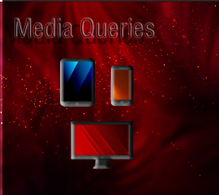
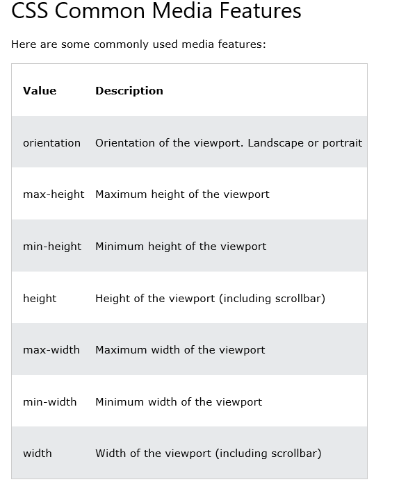

~Media Queries~
3/18/2024
What are some of the quirks of Media Queries?
Unfamiliar Naming and color Coding
Syntax of media type targeting
Specifying certain Tasks at Certain Sizes
What are CSS Media Queries?
Media queries help our webpages in becoming more fluid. Even though there tends to be some controversial information on when media queries actually came into being, with some saying that they were introduced in CSS2, which was in its final completion phase, when CSS3 was released in 1999.
Some of the later dates of its creation, sound a bit more plausible because cell phones, and tablets in the beginning era of web page creation were not quite as prevalent, and there simply was not that great of a need for our pages to be fluid in sizing. So, from what I have gathered there seems to have been some working draft for these things starting as early as in 2001, but it did not actually become a recommendation by W3C until June, 19th of 2012. And then some proposed corrections were published as recently as April 5th, 2022.
What are some of the quirks of Media Queries?
Multiple Banner Images
Media Queries, are pretty good at being able to take care of some of the issues that things like flexbox have not yet been able to resolve, but it is not that they come completely free of all issues.
For example, you will find that flex box will not be able to completely handle your banner images, and so they will not look correct with different sized devices. But while you can use media queries, and they work very well; now you are faced with creating a separate image for every single one of your different media types. And that is no small task.
As I stated in my last tutorial, Web Page design. These are your official sizes listed in large font size, but the sizes that actually worked for my own devices were a bit different, and those sizes I listed below them in the smaller font. You might even have to do your own finagling for things to work for your own designs.

CSS Placement for Media Queries
Another issue that you will find to be a bit maddening about these media queries, is there insistence on where they want to be placed in your code. You MUST, place these media queries at the bottom of your CSS code. If you try to list any other normal rule underneath of it, you will find that your CSS simply will not listen to you. And if you find that your CSS is not paying you any attention, a very good place to look is if your App for making web pages have automatically thrown your new rule, under your media queries, and if it has, you will have to drag it back up into a more appropriate position in your code.
I am going over some of the things that I have already stated in my last tutorial, but learning how to use your media queries correctly will be important, and reviewing this stuff can’t hurt.
if you are working with min-width in your media queries, you want to make sure that you start with your smallest screen size first. That is why we are starting with our screen size of 300. Of course, if you are using max-width, you will need to start with your largest size first. Order matters, when it comes to writing media queries.
Unfamiliar Naming and color Coding
If you are coming into media queries for the first time, the syntax itself might seem a bit scary, but there isn’t all that much to them. For example, they are in that reddish brown color, so that you can distinguish them from the regular rules you have in your CSS, and hopefully not forget that all the code that does look this strange is placed last, and after all of your regular rules.
The @ sign in the media query rule, is just a part of its naming convention and is further used to show this rule apart from being a normal rule.
What is Media Query Doing?
Customized Experience
Well, just in case you haven’t figured out by now, media queries are telling your web page that it wants it to act differently depending on what dimensions it is being viewed at. You do not want an absolutely humongous web image to be displayed at a cell phone size, any more than you would want a tiny image to be showing on your desktop. You want your user to feel as if their visual experience is being designed especially for them, and with media queries essentially, they are.
You put the size that you want the rule to apply to inside of the parenthesis following the media query declaration. You will state if these rules will be following a min-width or max-width line of reasoning and depending on what you chose, you will make sure that the order of these rules are placed correctly, as stated earlier in this article here.
Media Targeting
You can target specific media using media queries.
Syntax of media type targeting
…Ok fine, a list. But how do we actually use this, and where do we put it.
You will need to start by creating different CSS documents. One for print, and one for screen, and target those in the heading of the html document like this. You see, media, is built-in, and it just works when you use it because someone wrote all of the code for it to work under the hood. So, say media = “print” and it knows how to handle that.
This is how the different rules are written in the appropriate CSS document.
print.css
Specifying certain Tasks at Certain Sizes
Sometimes you might want things to behave differently in your styling layout based on the size of the device. For example, if you want to order different divs differently, if it gives your user a better visual user experience. You can use media queries, and the order property to get this one done.
We explained how we were doing this in our last tutorial on web page design also, but here is a short review again.
Specify how you want your layout to be at your smaller screen sizes in your html.
Do the reordering of the divs at the largest size